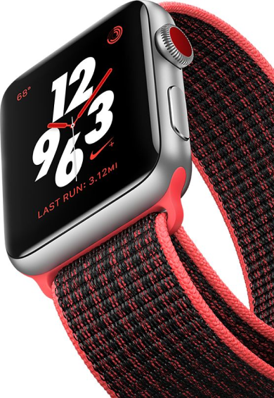

Answer a call from your surfboard. Ask Siri to send a message. Stream your favorite songs on your run. And do it all while leaving your phone behind. Introducing Apple Watch Series 3 with cellular. Now you have the freedom to go with just your watch.
Freedom calls.

Know your runs. In and out.
Train smarter with more in-run stats. Want to compare a run to your last five? Just swipe left. Mark splits by selecting pause or using gestures, like tapping the screen or double-clicking the side button. And get a full post-run report, including elevation.
Run in good spirits.
A little support can go a long way. You can receive encouraging emoji from friends. And reminders triggered by your friends’ shared activity, the current weather, or your own history give you every reason to run.
Just do it. Sunday.
Run every Sunday and see how long you can keep your streak alive. Fuel your run with exclusive Nike+ Run Club playlists on Apple Music.
Nike Sport Band.
Light. Flexible. Breathable.
Answer a call from your surfboard. Ask Siri to send a message. Stream your favorite songs on your run. And do it all while leaving your phone behind. Introducing Apple Watch Series 3 with cellular. Now you have the freedom to go with just your watch.